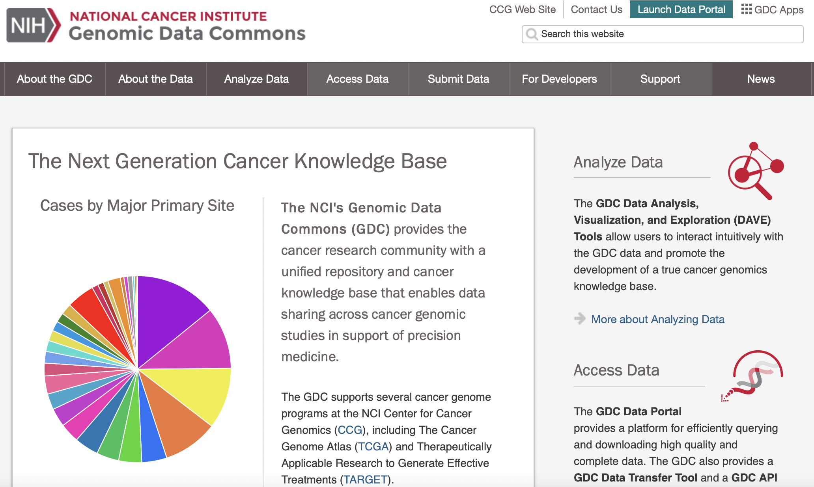

NCI Genomic Data Commons - (GDC) API
Explored by:
CHENG, MICHAEL WEN-KAI, OH, JIEUN, YAMAMOTO,RYO-(Bioinformatics 201, Winter-2022, UCLA)

Description:
Genomics Data Commons is a database where cancer researchers and bioinformaticians can download patient data for cancer analysis, including RNA-sequencing, DNA methylation, and ATAC-seq for a variety of cancer types. GDC portal can be accessed directly through this link: portal.gdc.cancer.gov.
You can find instructions for how to use two popular API’s here:
Use Cases:
- Data Exploration and Retrieval – Gather genomic data from patients of a certain cancer type on the Repository page or through the above APIs.
- Clinical Comparison – Compare clinical characteristics of specified groups of patients on the Analysis page.